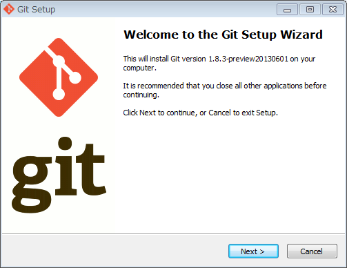
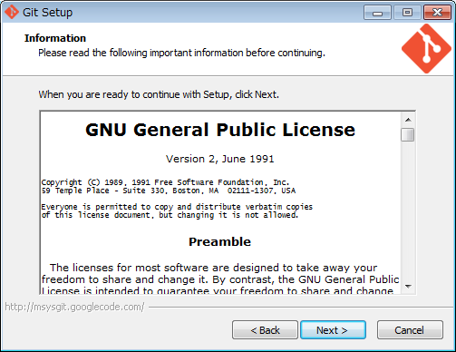
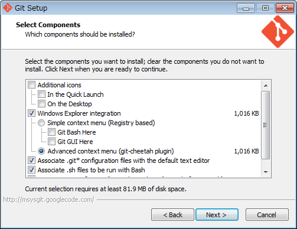
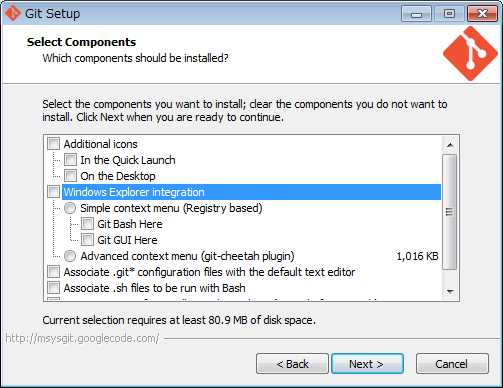
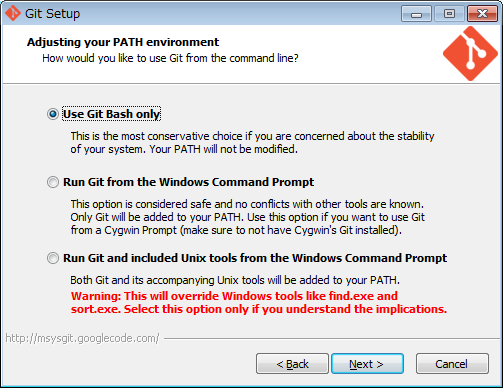
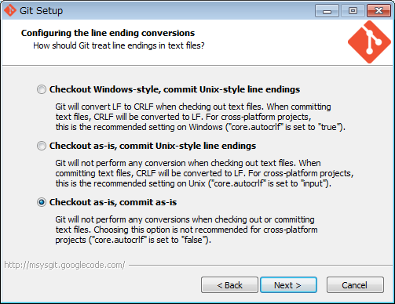
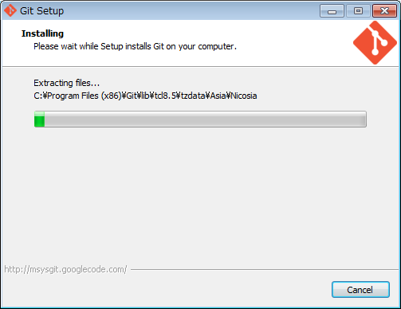
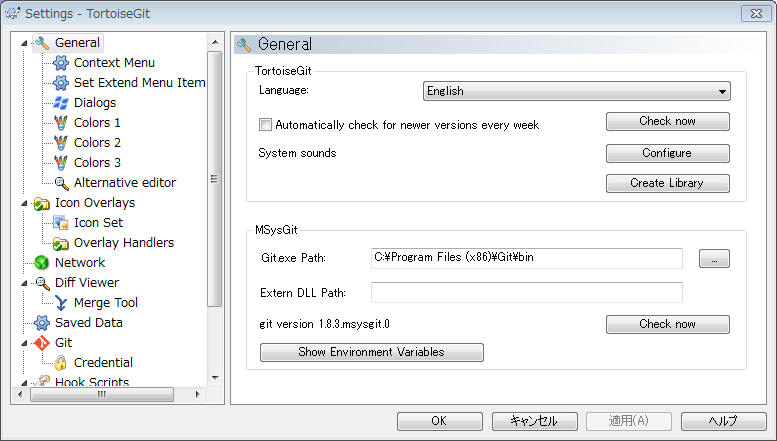

カテゴリ: Git
2013年になって、ようやくお仕事の都合もあり、Gitを使って見ることにしました。
Redmineとの連携も体験したかったので、ALMiniumをUbuntu上に展開し、そこにリモートリポジトリを作成して練習してみました。
ということで、その時の練習メモです。
- Gitの使い方メモ
- 初期設定
- 日本語文字化け対策(Cygwin Git)
- 基本的なファイル追加・名前変更・削除操作
- gitのオプションでよく見かける "--" は何？
- Gitにおける「元に戻す」or「変更を取り消す」(例: svn revert) 処理の考え方 (git-reset, git-checkout)
- git-diffのポイント
- git-diff でpagerが起動するのを止めさせたい
- git-diff と 通常のdiff, patchコマンドの相互運用
- ファイル・ディレクトリを無視させる
- ブランチの作成と切り替え
- HTTP(S)で認証ありのリポジトリを操作するとき、ユーザ名とパスワードを都度入力したくない
- GitリポジトリをLANやインターネットに対して公開したい。
- HTTP(S)プロトコルを使うとき、プロキシを経由させたい
- LAN上で自己署名証明書でHTTPSプロトコルでGitサーバーを立ちあげたので、証明書検証を無効化したい
- GitHub関連
- 参考資料
- WindowsでのGit利用
本家：
- Git
- Pro Git - Table of Contents
- GitHub
- EGit (Eclipse用Gitプラグイン)
- alminium/alminium
JavaによるGit関連ライブラリ
- Javaとgitに関連するライブラリー等のまとめ - memo.yomukaku.net
勉強した時の参考資料：
- かんばん！～もし女子高生がRedmineで「スクラム」開発をしたら
- サルでもわかるGit入門 〜バージョン管理を使いこなそう〜 | どこでもプロジェクト管理バックログ
- http://www.backlog.jp/git-guide/
- 「サルでもわかる〜」があれば本記事の使い方メモは読まなくてもOK。
- http://www.backlog.jp/git-guide/
Gitの使い方メモ
各種参考資料からの抜き書き。（もしかしたら間違ってるかもしれないので注意）
初期設定
$ git config --global user.name "FirstName FamilyName" $ git config --global user.email foo@example.com $ git config --global core.editor "/usr/bin/vim"
SSLの証明書検証を無視させる：社内LAN上のサーバを参照する場合など。
$ git config --global http.sslverify false
日本語文字化け対策(Cygwin Git)
今回検証に使ったCygwin Gitのバージョン
$ git --version git version 1.7.9
LANG環境変数
$ echo $LANG ja_JP.UTF-8
"git diff"文字化け対策(?):
$ export PAGER="lv"
コミットログ編集時文字化け対策:
$ git config --global i18n.commitencoding UTF-8
"git status"文字化け対策:
$ git config --global core.quotepath false
参考：
- SubversionからGitへ移行しようとして日本語ファイル名(UTF8)に困ったことある方に (ゆめ技：ゆめみスタッフブログ)
- nashellog: Cygwin上のgit statusで文字化け
- cygwinのgitで日本語を文字化けさせない | Memorandum
- cygwinのgitで日本語を文字化けさせない - もうカツ丼でいいよな
基本的なファイル追加・名前変更・削除操作
"git add"をskipしてcommit
$ git commit -a
"git add"したファイルを"Stage(Index)"から外したい
$ git status -s M hello.txt $ git add hello.txt $ git status -s M hello.txt
→これを戻す：
$ git reset -- hello.txt Unstaged changes after reset: M hello.txt $ git status -s M hello.txt
→さらに、hello.txtの変更も無効化して最後の状態に戻すには：
$ git checkout -- hello.txt
1つ手前のコミット状態に戻したい
HEAD自体が参照しているリビジョンは動かさずに、Stage(Index)とWorking Directoryを巻き戻す：
$ git checkout HEAD^ $ git branch * (no branch) master
その後、調べ物が終わったので、masterのHEADに戻す：
$ git checkout master
HEAD自体を巻き戻す：
$ git reset HEAD^
→ただし、これだと"Stage(Index)"を1つ手前に戻した状態となる。HEADを移動させるには、リビジョンのID指定で"git reset"し直す必要がある。
ファイル名の変更と削除と移動
ファイル名の変更
$ git mv old new
ファイルの削除
$ git rm file
ファイルの移動
- 普通にOSコマンドやファイルマネージャでファイルを移動する。
- 移動先のファイルをgit-addする。
- 前のファイルをgit-rmする。
- → Git側で自動的に「移動したもの」として扱ってくれる。
※ディレクトリ単位でごっそり移動するのであれば、 git-mv 使ったほうが早そう。
gitのオプションでよく見かける "--" は何？
unixコマンドのオプションの一般的な慣習として、"--" 以降はオプションではなくファイル名のみを指定する慣習があり、Gitでもそれに倣っている。
なぜそういう慣習ができたかというと、ファイル名として "-" から始まるものがあると、ファイル名を指定したのかオプションを指定したのか、区別が出来ないため、"--" をオプションの終端として使うようになったらしい。
参考：
- bash - What does "--" mean in Linux/Unix command line? - Unix & Linux Stack Exchange
Gitにおける「元に戻す」or「変更を取り消す」(例: svn revert) 処理の考え方 (git-reset, git-checkout)
3行でまとめると：
- Gitには"svn revert"のように「元に戻す」or「変更を取り消す」というコンセプトを直接実装している機能は無い（多分）。
- 代わりに、index または working-tree を特定のcommit状態に変更する(= 指定されたcommitのデータで現在のindex or working-treeを上書きする) コマンドがある。
- それらのコマンドを使うことで、「元に戻す」or「変更を取り消す」効果を実現出来る。index用にgit-reset, working-tree用にgit-checkoutがある。
なぜ "git reset HEAD --" でIndexからの変更を削除したことになるのか？
$ git reset HEAD -- (file名)
→ git-reset は Index に対して特定の commit 内容を反映させるコマンド。commitとしてHEADを指定すれば、HEAD内容を反映させる事になり、事実上、git-add したのを取り消す効果になる。
(1) HEAD working-tree Index file1(HEAD) file1(edit1) - (= file1(HEAD)) (2) git add HEAD working-tree Index file1(HEAD) file1(edit1) ----> file1(edit1) (3) git reset HEAD HEAD Index file1(HEAD) ----------------> file1(HEAD) -> equals to (1) state: HEAD working-tree Index file1(HEAD) file1(edit1) - (= file1(HEAD))
なお、git-resetはあくまでもIndexに作用するコマンドのため、working-treeが変更されることは無い。
なぜ "git checkout --" でworking-treeへの変更を元に戻したことになるのか？
$ git checkout -- (file)
→git-checkout は working-tree に対して特定の branch or commit 内容を反映させるコマンド。commit省略時はHEADが参照され、HEAD内容をworking-treeに反映させる事になり、事実上、working-tree への変更を取り消す効果になる。
(1) git checkout -- file1 HEAD working-tree file1(HEAD) --> file1(=HEAD) (2) edit HEAD working-tree file1(HEAD) file1(edit1) (3) git checkout -- file1 HEAD working-tree file1(HEAD) --> file1(=HEAD)
なお、git-checkoutはあくまでもworking-treeに作用するコマンドのため、Indexが変更されることは無い。
git-diffのポイント
3行でまとめると：
- 基本となる "git diff --" は、まだ git-add してない working-tree を差分表示すると覚えておく。 (working-tree <> index, indexの暗黙的な初期状態はHEAD)
- 特定のcommit(例: HEAD)やbranchとworking-tree 間の差分を取るには、 "git diff [commit or branch] --" を使う。"git diff HEAD" なら HEAD <> working-tree の差分となる。
- "git diff --cached [commit] --"は、特定のcommit(例: HEAD)とindex 間の差分を取る。commit省略時はHEAD <> index の差分となる。
ユースケース
- 「git addしてないのってどんな内容だっけ？」 -> "git diff"
- 「やべ、今編集してるの、HEADとどこまで変更したか忘れた。」 -> "git diff HEAD"
- 「今 index に上がってるのcommitすると、HEADとどこまで差分が出る？」 -> "git diff --cached""
git-diff でpagerが起動するのを止めさせたい
解法1: "core.pager" 設定を "cat" にする。
$ git config --global core.pager cat
解法2: gitのオプション、"--no-pager" を指定する。
$ git --no-pager diff
参考:
- How do I prevent git diff from using a pager? - Stack Overflow
git-diff と 通常のdiff, patchコマンドの相互運用
参考:
- 普通のpatchコマンドで取り込めるdiffファイルをgitで作成する - kanonjiの日記
- git diff コマンドとふつうの diff / patch コマンド | gotohayato
- Git で変更を patch ファイルにする / patch コマンドで適用する - Qiita
- どこでも使える git diff と git apply - Qiita
git-diff自体も非常にオプションが豊富で、かなり精密な処理ができると思われる。
なお、git-diff はgit独自実装となるが、git-difftoolを使うと他のdiffツールを使うことができる(= git が他のdiffツールのフロントエンドとして動作する)。
ファイル・ディレクトリを無視させる
基本は "man gitignore" 参照。
参考:
- gitで管理しないファイルを無視させる .gitignore｜misc｜@OMAKASE
- 既に git 管理しているファイルをあえて無視したい #git - Qiita
- http://qiita.com/items/56d0d3ba7a1300625f92
- IDEの設定ファイルなど、「最初の一回目以降の変更は無視させたい」場合に適用可能か。
- http://qiita.com/items/56d0d3ba7a1300625f92
ブランチの作成と切り替え
その１：user1で新規ブランチ作成～pushまで
$ git checkout -b b2 ... some modification ... $ git commit -a $ git push origin b2 Counting objects: 5, done. Delta compression using up to 4 threads. Compressing objects: 100% (3/3), done. Writing objects: 100% (3/3), 313 bytes, done. Total 3 (delta 1), reused 0 (delta 0) To http://shade1.glamenv-septzen.net/git/testproject1 * [new branch] b2 -> b2
その２：user2で、新しくpushされたb2をpullして編集、pushするまで
$ git pull remote: Counting objects: 5, done. remote: Compressing objects: 100% (3/3), done. remote: Total 3 (delta 1), reused 0 (delta 0) Unpacking objects: 100% (3/3), done. From http://shade1.glamenv-septzen.net/git/testproject1 * [new branch] b2 -> origin/b2 Already up-to-date. $ git checkout b2 ... $ git commit -a $ git push Counting objects: 5, done. Delta compression using up to 4 threads. Compressing objects: 100% (3/3), done. Writing objects: 100% (3/3), 343 bytes, done. Total 3 (delta 1), reused 0 (delta 0) To http://shade1.glamenv-septzen.net/git/testproject1 e90b0d3..bd9b8ae b2 -> b2
その３：user1で、user2がb2にpushした変更をpullして、masterにマージするまで
$ git branch b1 * b2 master $ git pull remote: Counting objects: 5, done. remote: Compressing objects: 100% (3/3), done. remote: Total 3 (delta 1), reused 0 (delta 0) Unpacking objects: 100% (3/3), done. From http://shade1.glamenv-septzen.net/git/testproject1 e90b0d3..bd9b8ae b2 -> origin/b2 You asked me to pull without telling me which branch you want to merge with, and 'branch.b2.merge' in your configuration file does not tell me, either. Please specify which branch you want to use on the command line and try again (e.g. 'git pull <repository> <refspec>'). See git-pull(1) for details. ...(省略)... See git-config(1) for details. →怒られたので、originとブランチ名を指定してみる： $ git pull origin b2 From http://shade1.glamenv-septzen.net/git/testproject1 * branch b2 -> FETCH_HEAD Updating e90b0d3..bd9b8ae Fast-forward hello2.txt | 1 + 1 files changed, 1 insertions(+), 0 deletions(-) →masterブランチにmergeして、pushする。 $ git checkout master Switched to branch 'master' $ git merge b2 Updating 8914003..bd9b8ae Fast-forward hello2.txt | 3 +++ 1 files changed, 3 insertions(+), 0 deletions(-) $ git push Total 0 (delta 0), reused 0 (delta 0) To http://shade1.glamenv-septzen.net/git/testproject1 8914003..bd9b8ae master -> master
その４：作業が終わったb2ブランチを削除する(未完)
最初にローカルから削除。 $ git branch -d b2 Deleted branch b2 (was bd9b8ae). 続いてリモートから削除。 $ git push origin :b2 remote: error: denying ref deletion for refs/heads/b2 →???
ALMiniumとGitのアカウントの連携の設定が影響してるのか、リモートブランチ削除できない・・・。順番がおかしいのか？謎。
リモートのブランチを削除する方法が覚えづらい。なんで":"(コロン)使うの？
リモート(origin)のb1ブランチを削除する例：
$ git push origin :b1
→git-push では、push「元」(src)とpush「先」(dst)を、 "src:dst" という形で指定することが出来る。"git push origin :b1" というのは src が空文字列、つまり空っぽの内容を b1 にpushすることになり、結果として、リモートのb1ブランチを削除したことになる。
":"(コロン)記法が覚えづらい場合は、素直に "--delete" オプションを使うと良い。originのb1ブランチの削除であれば、以下のようになる:
$ git push --delete origin b1
参考
- Gitで、リモートにあるブランチを削除する方法 - DQNEO起業日記
HTTP(S)で認証ありのリポジトリを操作するとき、ユーザ名とパスワードを都度入力したくない
1.7.9 以上なら、時間を決めてキャッシュ出来るようになりました。専用のデーモンが裏で起動されてキャッシュしてくれるようです。
$ git config --global credential.helper 'cache --timeout=3600' → 1時間キャッシュしてくれる。 $ git config --global credential.helper store → $HOME/.git-credentials に平文で保存してくれる。
古いバージョンだと、originサーバのURLにユーザ名・パスワードを仕込んでおいたり、"~/.netrc" に書いたりしてたようです。
参考：
- git を https 経由で使うときのパスワードを保存する - Qiita [キータ]
- git credential helperを使ってHTTP越しで認証がかかっているリポジトリにアクセスする | misty-magic.h
- Basic認証がかかっているリポジトリにgit・hgでアクセスする際、ユーザ名とパスワードを保存する方法 | misty-magic.h
- Git設定 | 逆引きGit | サルでもわかるGit入門 〜バージョン管理を使いこなそう〜 | どこでもプロジェクト管理バックログ
- トラブルシューティング | 逆引きGit | サルでもわかるGit入門 〜バージョン管理を使いこなそう〜 | どこでもプロジェクト管理バックログ
- git - Is there a way to skip password typing when using https:// github - Stack Overflow
- Githubへのpushでusername/passwordを省略する方法２つ - Shoken OpenSource Society
GitリポジトリをLANやインターネットに対して公開したい。
Gitリポジトリを他のマシンにネットワーク越しで公開する場合は、"Git サーバー" を立ち上げることになります。
Gitの独自プロトコル、SSH、HTTP(S)と複数種類で公開できます。まずは以下の公式ドキュメントに目を通すと良さそうです。
他参考：
- SSHとHTTPSでアクセスできるGitサーバの設計と構築 - GeekFactory
- https://www.kernel.org/pub/software/scm/git/docs/howto/setup-git-server-over-http.txt
なお、GitHubクローンと呼ばれるソフトウェアでは、GitHubのようなWebインターフェイスに加えて、自動的にGitサーバーをセットアップしたり操作してくれる機能を持ってる場合があります。
典型的な「認証付きでPush可能なHTTP(S)/SSH経由のGitサーバー」をセットアップするような場合は、GitHubクローンの導入でまとめてセットアップ出来るかもしれませんので、そちらを試してみても良いかもです。
HTTP(S)プロトコルを使うとき、プロキシを経由させたい
git config --global http.proxy xxx.xxx.xxx.xxx:port-num
via:
- Git設定 | 逆引きGit | サルでもわかるGit入門 〜バージョン管理を使いこなそう〜 | どこでもプロジェクト管理バックログ
LAN上で自己署名証明書でHTTPSプロトコルでGitサーバーを立ちあげたので、証明書検証を無効化したい
git config --global http.sslverify false
GitHub関連
README.md のMarkDown
GitHub用に調整されたMarkDownになっているそうです。
- GitHub Flavored Markdown · github:help
使いこなしガイド：
- 脱GitHub初心者を目指す人のREADMEマークダウン使いこなし術 | ゆっくりと…
オンラインでプレビューできるサービス：
- Github Preview
チートシート：
- Markdown Cheatsheet · adam-p/markdown-here Wiki
参考資料
Git Cheat Sheet
- Git Reference
- http://gitref.org/index.html
- Gitの主要コマンドの典型的な使い方が網羅されたリファレンス。個人的には、割りとわかりやすく感じました。
- http://gitref.org/index.html
- A Visual Git Reference
- http://marklodato.github.com/visual-git-guide/index-en.html
- 各種操作における "Working Directory", "Stage(Index)", "History" を始めとする各データ要素間でのやりとりがわかりやすく図示されている。内部処理を理解する上で重要そう。
- http://marklodato.github.com/visual-git-guide/index-en.html
- Git Cheat Sheet 日本語版 | textdrop
- http://www.textdrop.net/doc/git-cheat-sheet-ja/
- 印刷して手元に置いておきたい。
- http://www.textdrop.net/doc/git-cheat-sheet-ja/
- 見えないチカラ: 【翻訳】Gitをボトムアップから理解する
- http://keijinsonyaban.blogspot.jp/2011/05/git.html
- Gitの内部処理の理解。Gitって内部処理を理解したほうが回り道に見えるけど実は近道な気がします。
Git Cheat Sheets それ自体のまとめ
Cheat Sheetもいろいろあるらしく、Cheat Sheet自体のまとめサイトが出てきてる。
- もっとよいGitチートシート - 西尾泰和のはてなダイアリー
- gitの仕組みがグラフィカルにすっきりわかるチートシート『Git Cheatsheet』 | IDEA*IDEA
- Git チートシート・ビジュアル解説・Tipsまとめ - NAVER まとめ
その他
- 環境、OSごとに.gitconfigの設定を切り替えたい - みちしるべ
WindowsでのGit利用
TortoiseGit
色々バリエーションがあると思いますが、2013年前半で試した感じでは TortoiseGit 1.8系 + msysgit 1.8系で安定して利用できています。
インストールする順番としては、TortoiseGit -> msysgitの順っぽいです。
- tortoisegit - Windows Shell Interface to Git - Google Project Hosting
- https://code.google.com/p/tortoisegit/
- SetupHowTo - tortoisegit - System prerequisites, Installation and upgrade howto - Windows Shell Interface to Git - Google Project Hosting
msysgitですが、git-scm.comからWindows用をダウンロードすれば問題ありません。ドキュメントによっては "Full installer for official Git for Windows" とか書いてあったりして混乱しそうですが、少なくともgit-scm.comからのWindows用ダウンロードで一般的な利用には問題ないと思います。
- http://git-scm.com/downloads
- サイトが飛び飛びになっていて分かりづらいんですが、↑からDLすれば、最終的にmsysgitをDLしたことになります。
- msysgit自体のサイト：
- ただ、開発の中心はgithubに移ったらしく、公式Webページとしては以下のサイトが最新のようです。
- http://msysgit.github.io/
- ちょっとややこしいですが、こちらのサイトの"Downloads"リンクをたどると、msysgitのcode.google.com側のファイルダウンロード画面に遷移します。(2013-07現在)
- 多分、ソースコードリポジトリやWebサイトとしてはgithub.ioに移動したが、バイナリファイルの配布についてはcode.google.com側を使っている状況なんでしょうか。
- https://code.google.com/p/msysgit/downloads/list を見てみると、Portableなパッケージや、"msysGit-fullinstall-xxxxx..." というパッケージもあったりします。TortoiseGitの説明にある"Full installer for official Git for Windows" というのは多分コレのことを指してるのかも。
- git-scm.comからDL出来るのは、Portableも、fullinstallでもない、Git-1.x.x.... のようです。一応これをインストーするすればMSysも全部入りで使えますので、わざわざ"fullinstall"とか選ぶ必要はないかもしれません。
- ただ、用途によってはPortableなものを入れたい人はそちらにして、TortoiseGit側で適宜設定変更しても大丈夫かも。
以下、 "Git-1.8.3-preview20130601.exe" のインストールの流れです。
1. セットアップ開始 -> "Next"

2. GPLへの同意 -> "Next"

3. コンポーネントの選択 : msysgitのため、msys側のbashとの連携オプションが選べます。・・・が、TortoiseGitにフロントエンドは一任するのであれば、各種連携機能をOFFにしても問題ありません。

4. ということで連携コンポーネントは全部OFFにして "Next"

5. GitへのPATH設定ですが、これもTortoiseGitをフロントエンドにして、そちらで直接git.exeへのフルパスを指定出来ますので、"Use Git Bash Only"を選択して、システム全体への環境変数は弄らないようにしておきます。

6. 改行コードです。変に自動変換されるとトラブルの元ですので、as-isにします。

7. インストール中。

8. あとは、TortoiseGit側のMSysGitの設定で↑でインストールしたgit.exeのbinフォルダを指定すればOKです。

Atlassian SourceTree
v1.3.3を試してみたが、使いやすかったです。
- Git、Mercurial 対応 無料 DVCS Mac、Windowsクライアント | Atlassian